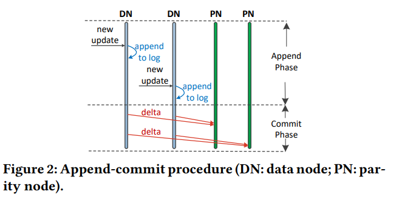
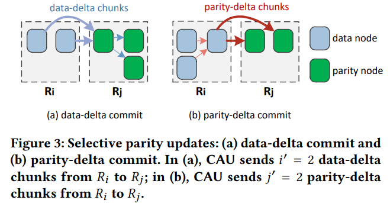
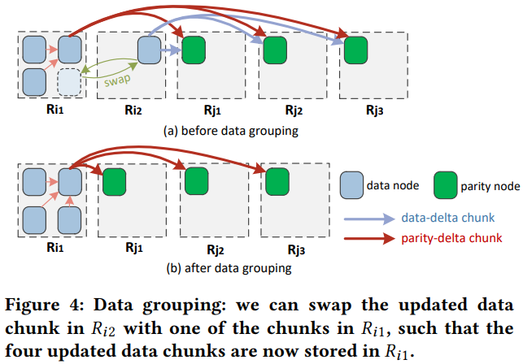

@ICPP'18 @Cross-Rack-Aware @Parity Updates
Cross-Rack-Aware Updates in Erasure-Coded Data Centers1. SummaryMotivation of this paper:Cross-Rack-Aware UpdatesImplementation and Evaluation2. Strength (Contributions of the paper)3. Weakness (Limitations of the paper)4. Future Works
Frequent small-size updates in turn lead to instensive parity updates in erasure-coded DCs Hierachical topological nature of DCs makes the cross-rack bandwidth often oversubscribed, and much more scarce thatn the inner-rack bandwidth.
it leverages the append-commit procedure, without immediately updating the associated parity chunk.
it appends the new data chunk to an append-only log, and executes the update in commit phase. (Note: there is no redundancy of this new update chunk interim replication)
Interim replication: currently stores one replica for each newly updates data chunk in a different rack temporarily. (until it performs parity updates in the commit phase)


- The difference of those two method is where to compute the change of a parity chunk (the place where the parity chunk store, or the place where the data chunk store). (Note: it is not the theorically minimum cross-rack update traffic, because it ignores the case of some special erasure code)
- process each stripe independently (rather than multiple stripes), and only select two racks for data grouping.
- swap (presever fault tolerence) updated data chunks and non-updated data chunks, reallocate the updated data chunks in the same rack, to mitigate the cross-rack update traffic. (Here is an algorithm to find the maximum gain of various swap schedules) 
- Compare with baseline and PARIX.
Recovery throughput, impact of non-buffered I/O, impact of gateway bandwidth, import of append phase time.
- To simulating a hierarchical DC, it uses a node to act as gateway. And use TC to limit the gateway bandwidth. so as to minic the over-subscription scenario.
- selective parity updates
- data grouping